第2讲 · 数列极限
据《张宇考研数学基础30讲·高等数学分册（2026版）》整理 · 覆盖原书 P123–P145
本讲导读
本讲考题就一件事：证明数列极限的存在性，选择、填空、解答题都出。它紧接第1讲函数极限——第1讲把 \(x\to\Box\) 的工具箱攒齐，本讲把自变量锁死成正整数 \(n\)；卷面上"用定义证明"基本不考，重心全在求极限或证明存在性。张宇在知识结构图里标得很直白：海涅定理、夹逼准则、单调有界准则是命题高峰，可出大题。大题套路相对固定：递推数列先证收敛（单调有界或压缩映射），再两边取极限求值。学的时候多回头对照第1讲：函数极限里好用的洛必达、泰勒、等价无穷小，数列这边都要靠海涅定理"过桥"才能用。
知识框架
- 数列的概念
- 整标函数：\(x_n=f(n),\ n\in\mathbf{N}_+\)，数列必有无穷多项
- 子列（奇子列 \(\{a_{2k-1}\}\)、偶子列 \(\{a_{2k}\}\)）
- 等差、等比、单调、有界数列
- 常用前 \(n\) 项和（含裂项相消）
- 数列极限的定义
- \(\varepsilon\)-\(N\) 语言；发散；无穷小量与无穷大量
- 与函数极限定义的对比（唯一性、有界性、保号性）
- 收敛数列的性质
- 唯一性、有界性、保号性；脱帽与戴帽
- 定理1：收敛数列的任何子列也收敛（判发散的利器）
- 极限四则运算规则（存在性口诀）
- 数列极限存在的准则（命题高峰，可出大题）
- 海涅定理（归结原则）：数列极限 \(\rightleftarrows\) 函数极限
- 夹逼准则 + 放缩手段（简单放缩、重要不等式、压缩映射原理）
- 单调有界准则 + 单调性五种判别法
- \(\{x_n\}\) 收敛于 \(a\) 的速度问题（高阶、同阶、低阶）
核心概念与定理
1. 数列：本质是整标函数
对每个 \(n\in\mathbf{N}_+\) 按某法则对应确定实数 \(x_n\)，按下标从小到大排成 \(x_1,x_2,\cdots,x_n,\cdots\)，就是数列 \(\{x_n\}\)。它就是 \(x_n=f(n)\)，几何上是数轴上的动点；数列一定有无穷多项。子列是从 \(\{a_n\}\) 里挑无穷多项、保持原顺序，记 \(\{a_{n_k}\}\)，下标 \(n_1<n_2<\cdots\) 为正整数，比如取 \(n_k=2k\) 与 \(2k-1\) 得偶、奇两个子列。
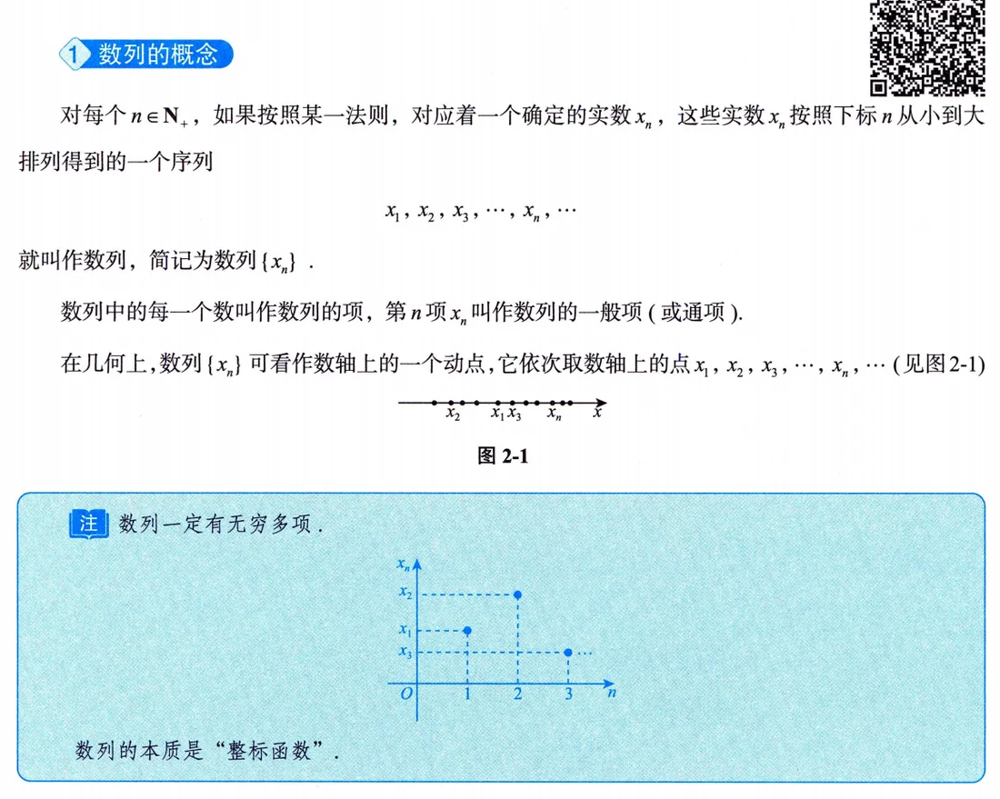
2. 有界数列与常用前 \(n\) 项和
等差、等比的通项与求和公式初中就熟：\(a_n=a_1+(n-1)d\)，\(S_n=\dfrac n2(a_1+a_n)\)；\(a_n=a_1r^{n-1}\)，\(S_n=\dfrac{a_1(1-r^n)}{1-r}\ (r\neq1)\)。这页真正要记的是：有界数列的定义（存在正实数 \(M\)，对一切 \(n\) 有 \(|a_n|\le M\)），证有界的四招（找 \(M\)、放缩、找最值、基本不等式），以及三组求和公式——第三条裂项相消和夹逼搭配出题率很高。
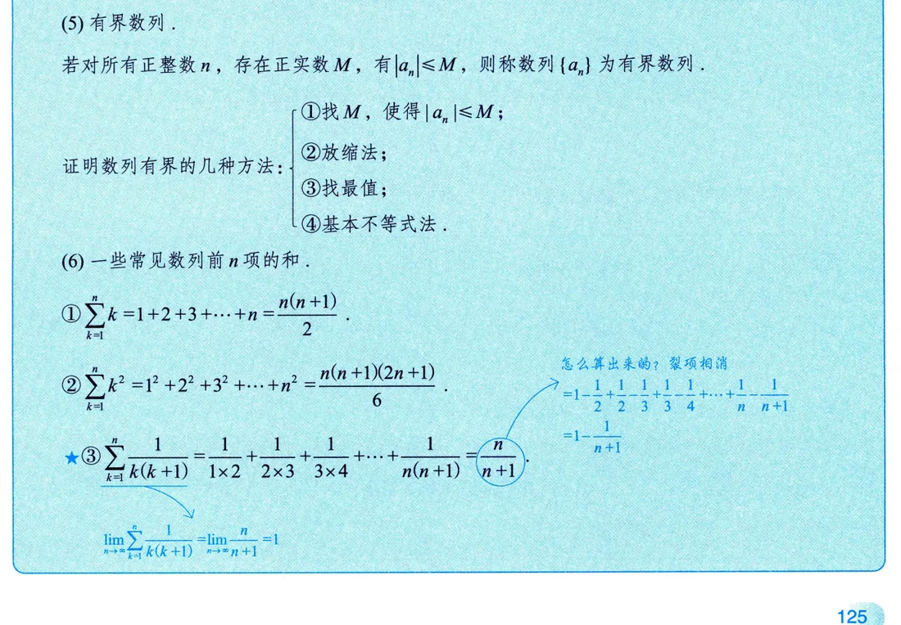
同页（印P126）还有一个重要数列：\(\left\{\left(1+\frac1n\right)^n\right\}\) 单调递增有上界，且 \(\lim\limits_{n\to\infty}\left(1+\frac1n\right)^n=e\)。
3. 数列极限的定义
设存在常数 \(a\)，对任意 \(\varepsilon>0\)（不论多小），总存在正整数 \(N\)，当 \(n>N\) 时恒有 \(|x_n-a|<\varepsilon\)，就称 \(a\) 是 \(\{x_n\}\) 的极限，记 \(\lim\limits_{n\to\infty}x_n=a\) 或 \(x_n\to a\)；不存在这样的 \(a\) 就叫发散。注意这里的 \(n\to\infty\) 指 \(n\to+\infty\)，而且是"离散"地跳过去。卷面不考用定义做证明题，选择填空考理解：与函数极限比，唯一性相同；有界性不同——函数极限是局部有界，数列极限是全局（每一项）有界；保号性上数列也要 \(n>N\) 之后才保号。
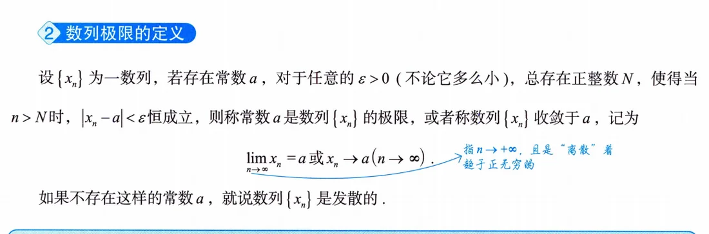
4. \(\varepsilon\)-\(N\) 常用语言与子列定理
写成逻辑式：\(\lim\limits_{n\to\infty}x_n=a\iff\) 任意 \(\varepsilon>0\)，存在 \(N\in\mathbf{N}_+\)，当 \(n>N\) 时恒有 \(|x_n-a|<\varepsilon\)；\(a=0\) 时 \(x_n\) 就是无穷小量。\(N\) 未必取整数，\(n>10000\) 和 \(n>10000.1\) 一个意思。核心是定理1：收敛数列的任何子列也收敛，且极限相同。逆否过来就是判发散的两板斧——找到一个发散的子列，或找到两个收敛到不同极限的子列（如 \(\{(-1)^n\}\) 的子列分别收敛于 \(1\) 和 \(-1\)）。例2.2 顺手证了 \(\lim a_n=A\Rightarrow\lim|a_n|=|A|\)，用的是三角不等式 \(\big||a|-|b|\big|\le|a-b|\)。
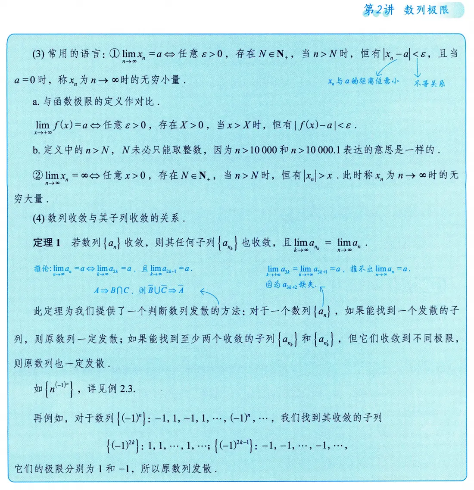
5. 收敛数列的三条性质与脱帽戴帽
唯一性：极限若存在则唯一。有界性：收敛 \(\Rightarrow\) 有界，反之不对。保号性：\(\lim x_n=a>b\)，则 \(n\) 充分大后 \(x_n>b\)；反过来若从某项起 \(x_n\ge b\) 且极限为 \(a\)，只能得 \(a\ge b\)——这就是脱帽戴帽的方向：脱帽严格（\(\lim x_n>a\Rightarrow x_n>a\)），戴帽不严格（\(x_n\ge a\Rightarrow\lim x_n\ge a\)，且要求极限存在），常考 \(b=0\)。
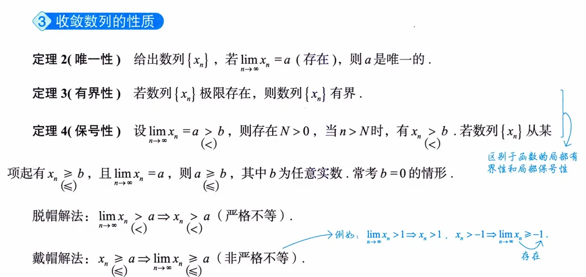
例2.5 用保号性判断 \(a_n=1-\frac{(-1)^n}{n}\) 的最值：写出 \(1+\frac11,1-\frac12,1+\frac13,\cdots\)，\(n\) 大的项全被挤到 \(1\) 附近没资格竞争，最大最小值只能出在前有限项，选 (A)。
6. 极限四则运算规则
若 \(\lim x_n=a,\ \lim y_n=b\)，则 \(\lim(x_n\pm y_n)=a\pm b\)，\(\lim x_ny_n=ab\)，\(b\neq0\) 时 \(\lim\dfrac{x_n}{y_n}=\dfrac ab\)；可推广到有限个数列。前提是两个极限都存在——这个前提才是考点，见下面例2.6。
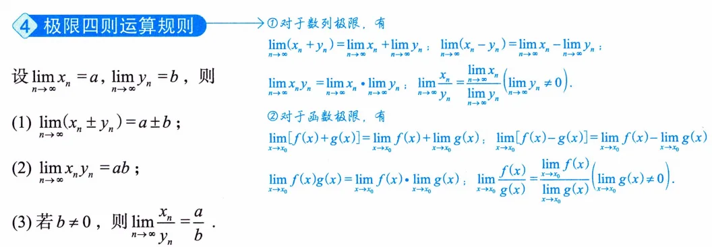
7. 海涅定理（归结原则）
设 \(f(x)\) 在 \(\mathring U(x_0,\delta)\) 内有定义，则 \(\lim\limits_{x\to x_0}f(x)=A\) 存在 \(\iff\) 对任何 \(\mathring U(x_0,\delta)\) 内以 \(x_0\) 为极限的数列 \(\{x_n\}\ (x_n\neq x_0)\)，\(\lim\limits_{n\to\infty}f(x_n)=A\) 存在。它是数列极限与函数极限之间的桥：数列是离散点列不能求导，换成函数极限后洛必达、泰勒、等价无穷小随便用，算完再把值带回来，比如 \(\lim\dfrac{\ln n}{n}=\lim\limits_{x\to+\infty}\dfrac{\ln x}{x}=\lim\dfrac{1/x}{1}=0\)。
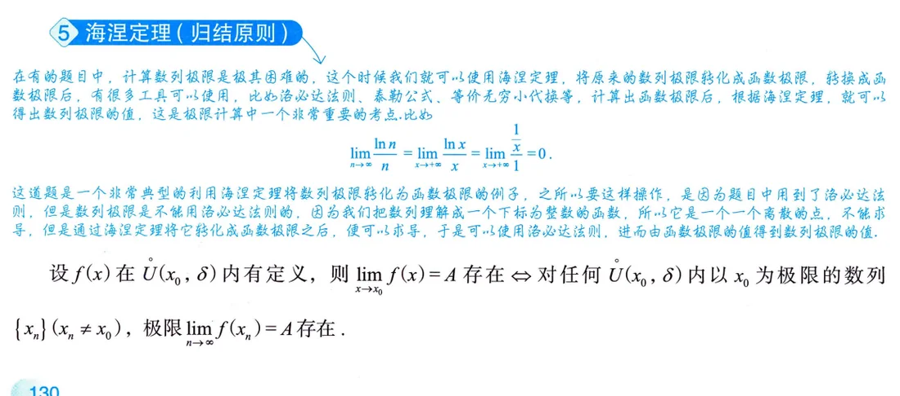
常考三种取点：\(x\to0\) 取 \(x_n=\frac1n\)；\(x\to+\infty\) 取 \(x_n=n\)；一般的 \(x_n\to a\) 且 \(x_n\neq a\)。
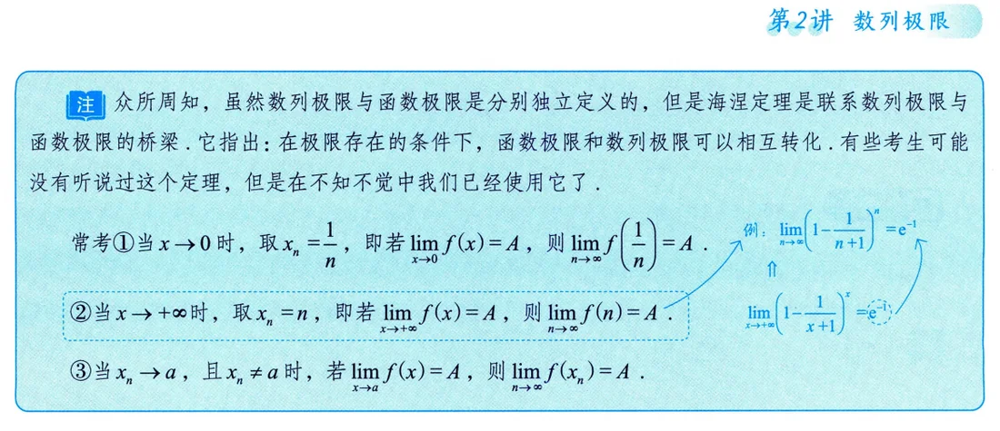
8. 夹逼准则与放缩手段
从某项起 \(y_n\le x_n\le z_n\)，且 \(\lim y_n=\lim z_n=a\)，则 \(\lim x_n=a\)。不等号带不带等号不用纠结（不需要验证符号），两端一起奔向 \(a\) 就行。难点在放缩，书里列了一整套工具：简单放大缩小（无穷项相加用 \(n\cdot u_{\min}\le u_1+\cdots+u_n\le n\cdot u_{\max}\)）、重要不等式、闭区间连续函数的最值、压缩映射原理、题设条件。
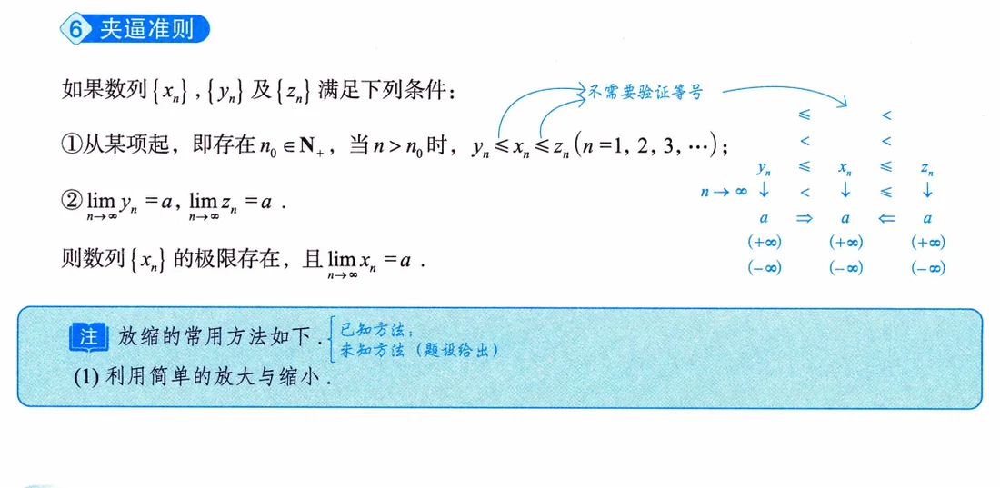
重要不等式清单值得整页背下来：三角不等式及其 \(n\) 项推广；均值不等式 \(\sqrt{ab}\le\frac{a+b}2\le\sqrt{\frac{a^2+b^2}2}\)；幂次不等式；\(\frac cb<\frac yx<\frac da\)（\(0<a<x<b,\ 0<c<y<d\)）；\(\sin x<x<\tan x\)，\(\sin x>\frac2\pi x\ (0<x<\frac\pi2)\)；\(\arctan x\le x\le\arcsin x\)；\(e^x\ge x+1\)；\(x-1\ge\ln x\)；\(\frac x{1+x}<\ln(1+x)<x\)。压缩映射原理一：存在 \(0<k<1\) 使 \(|x_{n+1}-a|\le k|x_n-a|\)，则 \(x_n\to a\)（逐次递推 \(k^n|x_1-a|\to0\)）；原理二：\(x_{n+1}=f(x_n)\)，\(f\) 可导，\(a\) 是 \(f(x)=x\) 的唯一解且 \(|f'(x)|\le k<1\)，用拉格朗日中值定理化归为原理一。考试用它俩时要写出证明过程。
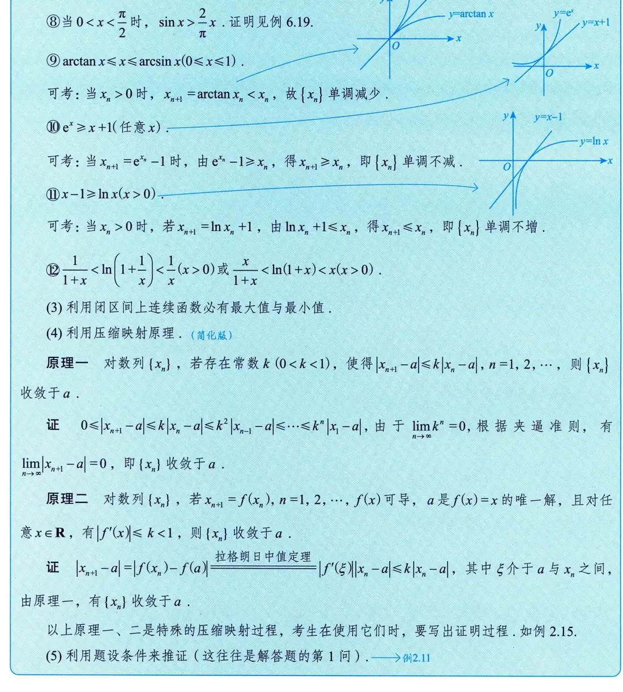
夹逼的好搭档还有例2.10 的结论（印P135，应当记住）：\(a_i\ge0\) 时 \(\lim\limits_{n\to\infty}\sqrt[n]{a_1^n+a_2^n+\cdots+a_m^n}=\max\{a_1,\cdots,a_m\}\)。例如 \(0<a<b\) 时 \(\lim(a^{-n}+b^{-n})^{1/n}=\frac1a\)；\(0\le x\le\frac\pi2\) 时 \(\lim\sqrt[n]{\sin^nx+\cos^nx}=\max\{\sin x,\cos x\}\)（按 \(\frac\pi4\) 分段），\(\lim\sqrt[n]{1+|x|^{3n}}=\max\{1,|x|^3\}\)。
9. 单调有界准则
单调有界数列必有极限，两种情形：单增配有上界、单减配有下界。记住方向别浪费：证出单增只需再证有上界，无须再证有下界，反之亦然。会背这两条即可：\(x_n\le x_{n+1}\le a\Rightarrow\) 极限存在；\(a\le x_{n+1}\le x_n\Rightarrow\) 极限存在。
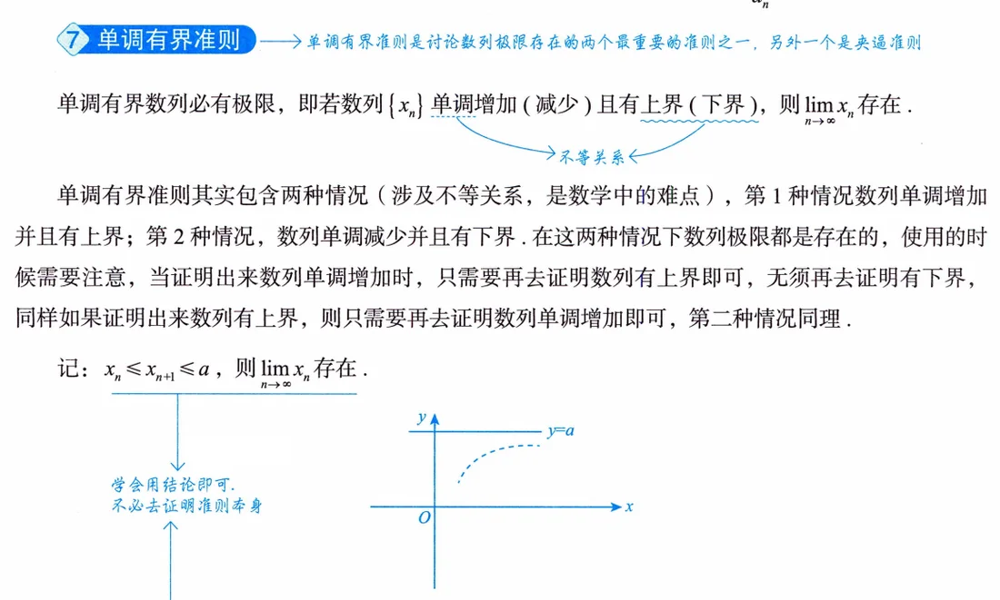
判单调五法：a. 作差 \(x_{n+1}-x_n\) 或作商 \(\frac{x_{n+1}}{x_n}\) 看符号；b. 数学归纳法（验 \(n=1\)、设 \(n=k\)、证 \(n=k+1\)）；c. 重要不等式（如 \(x_{n+1}=\sin x_n<x_n\)、\(x_{n+1}=e^{x_n}-1\ge x_n\)）；d. \(x_n-x_{n-1}\) 与 \(x_{n-1}-x_{n-2}\) 同号；e. \(x_{n+1}=f(x_n)\) 时看 \(f'\)：\(f'>0\) 则 \(\{x_n\}\) 单调（\(x_2>x_1\) 增、\(x_2<x_1\) 减），\(f'<0\) 则不单调。例2.14（印P138–139）是"单减 + 有下界 + 两边取极限 + 唯一根"的完整范本，解答过程需要背。
10. 收敛速度问题
同趋于 \(a\) 的两个数列，记 \(u_n=|x_n-a|,\ v_n=|y_n-a|\)，\(I=\lim\dfrac{u_n}{v_n}\)：\(I=0\) 则 \(x_n\) 收敛快（高阶）；\(I=b>0\) 则同阶（速度是 \(\frac1b\) 倍）；\(I=\infty\) 则慢（低阶）。如 \(x_n=\frac1n\) 比 \(y_n=\frac1{\sqrt n}\) 收敛到 \(0\) 快。关键推论：\(\varepsilon\)-\(N\) 定义只体现收敛目标、不体现速度，所以定义里的 \(\varepsilon\) 可以换成不依赖 \(n\) 的任意小正数（如 \(\frac1{2^k}\)，例2.16，等价），不能换成依赖 \(n\) 的量（如 \(\frac1n\)，例2.17 只是充分不必要，反例 \(x_n=a+\frac1{\sqrt n}\)）。
典型例题精讲
例2.1 基本不等式证有界
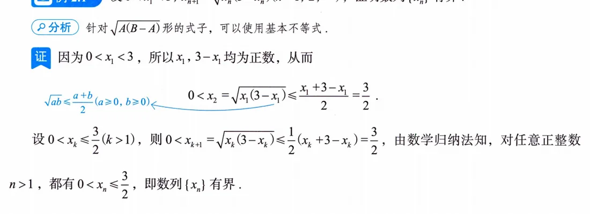
思路：看到 \(\sqrt{A(B-A)}\) 形式，用基本不等式 \(\sqrt{ab}\le\frac{a+b}2\) 把根号压成常数。
要点：\(0<x_1<3\Rightarrow x_1,3-x_1\) 均正，\(0<x_2=\sqrt{x_1(3-x_1)}\le\frac{x_1+3-x_1}2=\frac32\)。归纳假设 \(0<x_k\le\frac32\ (k>1)\)，则 \(0<x_{k+1}=\sqrt{x_k(3-x_k)}\le\frac12(x_k+3-x_k)=\frac32\)。故对一切 \(n>1\) 有 \(0<x_n\le\frac32\)，\(\{x_n\}\) 有界。
例2.2 取绝对值，极限传承
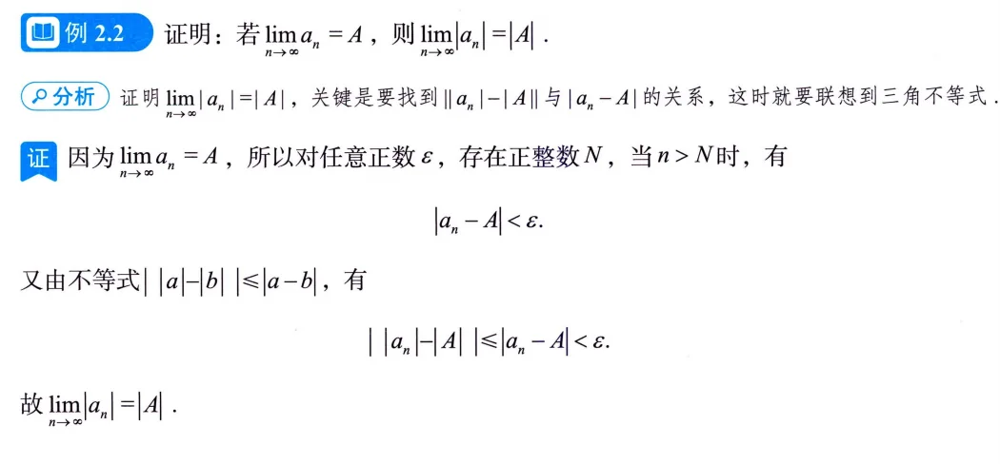
思路：用三角不等式 \(\big||a|-|b|\big|\le|a-b|\) 把 \(|a_n|-|A|\) 夹住，\(\varepsilon\)-\(N\) 语言照搬。
要点：任给 \(\varepsilon>0\)，由 \(\lim a_n=A\)，存在 \(N\)，当 \(n>N\) 时 \(|a_n-A|<\varepsilon\)；而 \[\big||a_n|-|A|\big|\le|a_n-A|<\varepsilon,\] 故 \(\lim|a_n|=|A|\)。
注：反方向只在 \(A=0\) 时成立，这是"证 \(a_n\to0\) 先取绝对值再夹逼"的依据。
例2.3 用子列证发散
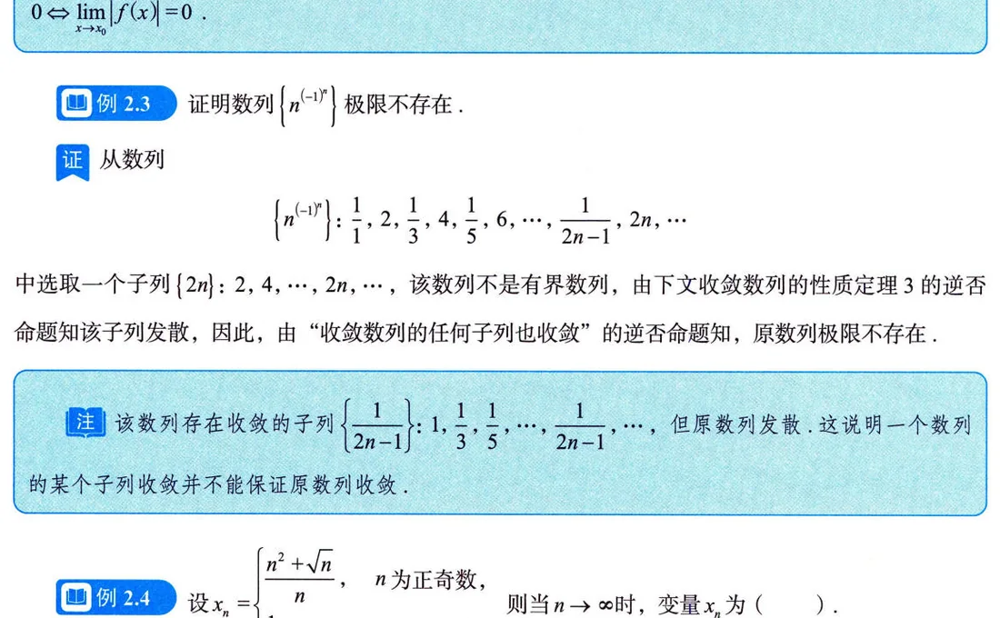
思路：通项带 \((-1)^n\) 的先拆子列，找两个"性格不合"的子列。
要点：数列为 \(\frac11,2,\frac13,4,\cdots,\frac1{2n-1},2n,\cdots\)。取子列 \(\{2n\}\)：无界，由"收敛必有界"（定理3）的逆否命题知它发散；再用定理1的逆否命题，原数列极限不存在。
注：奇子列 \(\{\frac1{2n-1}\}\) 却收敛于 \(0\)——个别子列收敛保不住原数列，这是单侧检验。
例2.4 无界变量不是无穷大量
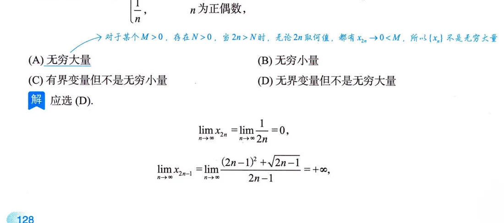
思路：分段数列按奇偶分两路求子列极限，再对照无穷大量定义。
要点：\(\lim x_{2n}=\lim\frac1{2n}=0\)；\(\lim x_{2n-1}=\lim\frac{(2n-1)^2+\sqrt{2n-1}}{2n-1}=+\infty\)。两子列极限不同，故 \(\lim x_n\) 不存在，也不是无穷小量；又对某个 \(M>0\)，偶数项总满足 \(x_{2n}\to0<M\)，无穷大量的定义 (\(|x_n|\) 最终大于任何正数) 不成立，所以是无界变量但不是无穷大量，选 (D)。
例2.5 保号性定最值项

思路：收敛数列的尾巴全挤在极限附近，没资格竞争最值，最值只能出在前有限项。
要点：\(a_n=1-\dfrac{(-1)^n}n\)，奇数项 \(1+\dfrac1{2k-1}\) 从 \(2\) 起单调减奔向 \(1\)，偶数项 \(1-\dfrac1{2k}\) 从 \(\dfrac12\) 起单调增奔向 \(1\)，故最大值项为 \(a_1=2\)（\(n=1\)），最小值项为 \(a_2=\dfrac12\)（\(n=2\)），选 (A)。
例2.6 四则运算的存在性
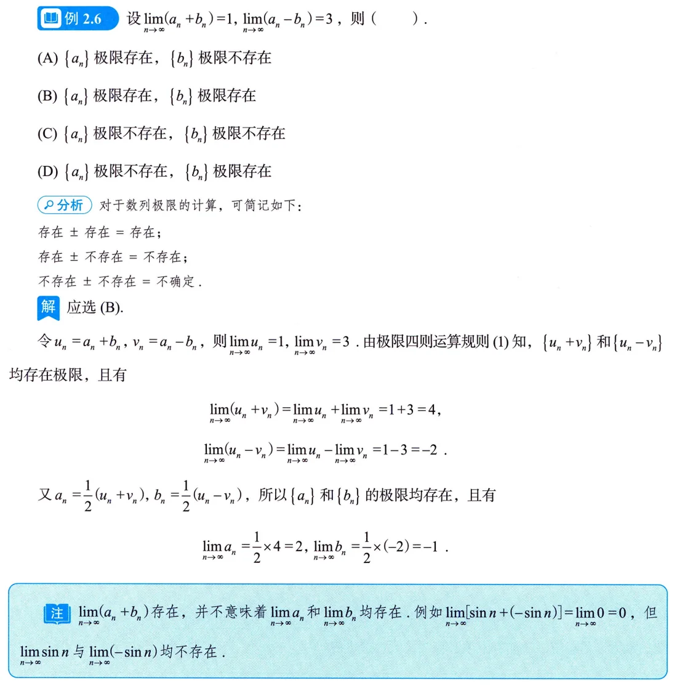
思路：把 \(a_n+b_n,\ a_n-b_n\) 当作极限已知的 \(u_n,v_n\)，反解出 \(a_n,b_n\)。
要点：口诀"存在 \(\pm\) 存在 \(=\) 存在；存在 \(\pm\) 不存在 \(=\) 不存在；不存在 \(\pm\) 不存在 \(=\) 不确定"。由 \(\lim(u_n+v_n)=1+3=4\)，\(\lim(u_n-v_n)=1-3=-2\)，而 \(a_n=\frac12(u_n+v_n),\ b_n=\frac12(u_n-v_n)\)，所以 \(\lim a_n=2,\ \lim b_n=-1\)，选 (B)。
注：和存在推不出各自存在，反例 \(\lim[\sin n+(-\sin n)]=0\)，但 \(\lim\sin n\) 不存在。
例2.7 归结原则判无界量
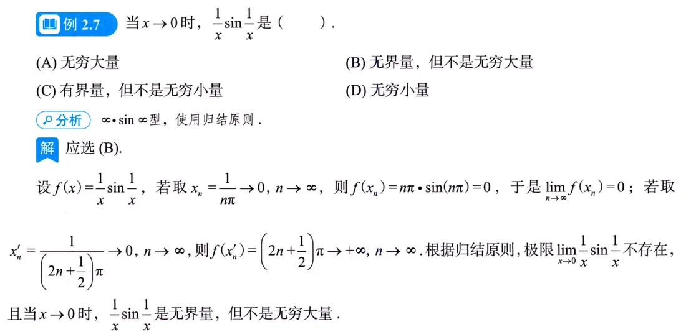
思路：\(\infty\cdot\sin\infty\) 型，取两列趋于 \(0\) 的点，让函数值一条全为 \(0\)、一条冲上 \(+\infty\)。
要点：取 \(x_n=\frac1{n\pi}\to0\)，则 \(f(x_n)=n\pi\sin(n\pi)=0\)，极限为 \(0\)；取 \(x_n'=\frac1{(2n+\frac12)\pi}\to0\)，则 \(f(x_n')=(2n+\frac12)\pi\to+\infty\)。由归结原则，\(\lim\limits_{x\to0}\frac1x\sin\frac1x\) 不存在，且它是无界量但不是无穷大量，选 (B)。
例2.8 根式 \(1^\infty\) 走海涅
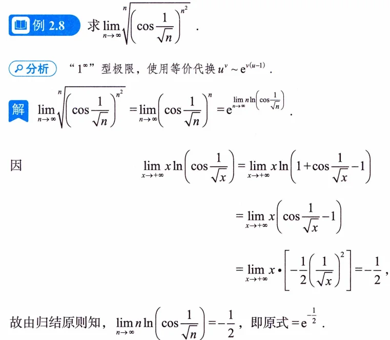
思路：\(n\) 次根开出来是 \(1^\infty\)，写成 \(e\) 指数，指数部分用海涅换成 \(x\to+\infty\) 做等价代换。
要点：原式 \(=\lim\left(\cos\frac1{\sqrt n}\right)^n=e^{\lim n\ln\left(\cos\frac1{\sqrt n}\right)}\)。因 \[\lim_{x\to+\infty}x\ln\left(1+\left(\cos\tfrac1{\sqrt x}-1\right)\right)=\lim_{x\to+\infty}x\left(\cos\tfrac1{\sqrt x}-1\right)=\lim_{x\to+\infty}x\cdot\left[-\frac12\left(\frac1{\sqrt x}\right)^2\right]=-\frac12,\] 由归结原则指数为 \(-\frac12\)，原式 \(=e^{-\frac12}\)。
注：原书顺势给了个等价无穷小（印P132）：\(\left(1+\frac1n\right)^n-e\sim-\frac e2\cdot\frac1n\)，由例1.24 的 \((1+x)^{1/x}-e\sim-\frac e2 x\ (x\to0^+)\) 换元 \(x=\frac1n\) 而来，对应题干里 \(a=-\frac e2\)。
例2.9 和式放缩 + 夹逼
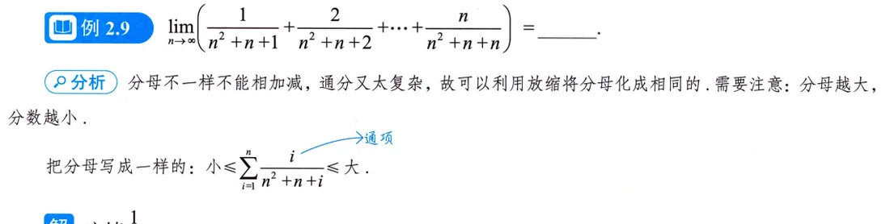
思路：\(n\) 项和分母各不相同，通分不现实；利用"分母越大分数越小"，把分母放缩成同一个。
要点：通项 \(\frac{i}{n^2+n+i}\)，分母介于 \(n^2+n+1\) 与 \(n^2+n+n\) 之间： \[\frac{n(n+1)}{2(n^2+n+n)}\le\sum_{i=1}^n\frac{i}{n^2+n+i}\le\frac{n(n+1)}{2(n^2+n+1)},\] 两端都趋于 \(\frac12\)，由夹逼准则原式 \(=\frac12\)。
例2.10 \(n\) 次根号下的和式：最大者称王
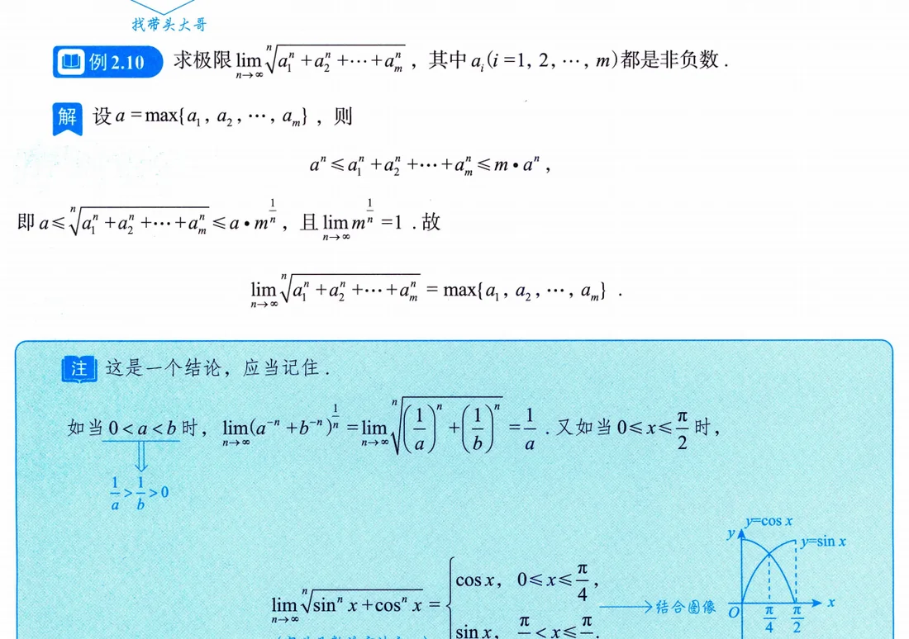
思路：\(n\) 次方放大最大者的统治力，把整个和式夹在"最大者"与"最大者 \(\times\,m^{1/n}\)"之间。
要点：不妨设 \(\max\{a_1,\cdots,a_m\}=a_1\)（若不然重新编号），则 \[a_1=\sqrt[n]{a_1^n}\le\sqrt[n]{a_1^n+a_2^n+\cdots+a_m^n}\le\sqrt[n]{m\,a_1^n}=a_1\cdot m^{1/n},\] 又 \(\lim\limits_{n\to\infty}m^{1/n}=1\)，由夹逼准则得 \[\lim_{n\to\infty}\sqrt[n]{a_1^n+a_2^n+\cdots+a_m^n}=\max\{a_1,\cdots,a_m\}\quad(a_i\ge0).\]
注：原书明确要求记住结论、可直接使用：(1) \(0<a<b\) 时 \(\lim\left(a^{-n}+b^{-n}\right)^{1/n}=\dfrac1a\)；(2) \(0\le x\le\dfrac\pi2\) 时 \(\lim\sqrt[n]{\sin^nx+\cos^nx}=\max\{\sin x,\cos x\}\)（按 \(\dfrac\pi4\) 分段）；(3) \(\lim\sqrt[n]{1+|x|^{3n}}=\max\{1,|x|^3\}\)（按 \(|x|\) 与 \(1\) 比大小分段）。
例2.11 等价无穷小逆用解抽象数列
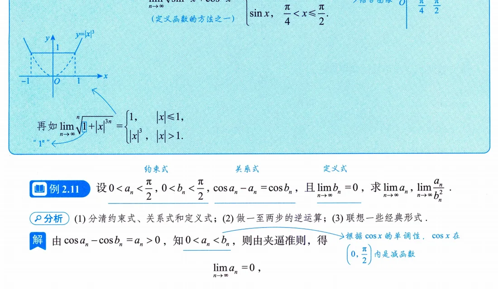
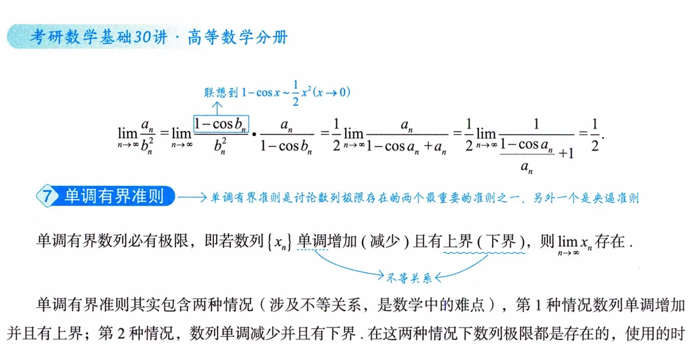
思路：条件移项凑出 \(1-\cos b_n\)，联想 \(1-\cos x\sim\dfrac12x^2\ (x\to0)\)；先证 \(a_n\to0\)，再整体代换。
要点：设 \(\lim\limits_{n\to\infty}b_n=0\)，\(b_n\neq0\ (n=1,2,\cdots)\)，\(\cos a_n-\cos b_n=a_n\)，求 \(\lim\dfrac{a_n}{b_n^2}\)。先定 \(a_n\) 的去向：若 \(a_n\to a\)，由归结原则 \(\cos a_n\to\cos a\)，对条件取极限得 \(\cos a=1+a\)，此方程唯一解为 \(a=0\)，故 \(a_n\to0\)。再由条件移项 \(1-\cos b_n=1-\cos a_n+a_n\)， \[\lim_{n\to\infty}\frac{a_n}{b_n^2}=\lim_{n\to\infty}\frac{1-\cos b_n}{b_n^2}\cdot\frac{a_n}{1-\cos a_n+a_n}=\frac12\lim_{n\to\infty}\frac{1}{\dfrac{1-\cos a_n}{a_n}+1}=\frac12\cdot\frac1{0+1}=\frac12,\] 其中 \(1-\cos a_n\sim\dfrac12a_n^2=o(a_n)\)。
注：抽象数列极限的核心动作是恒等变形造出已知等价无穷小的结构（\(1-\cos\)、\(\ln(1+\cdot)\)、\(e^{(\cdot)}-1\)），别急着硬算。
例2.12 单调有界求极限（大题模板）
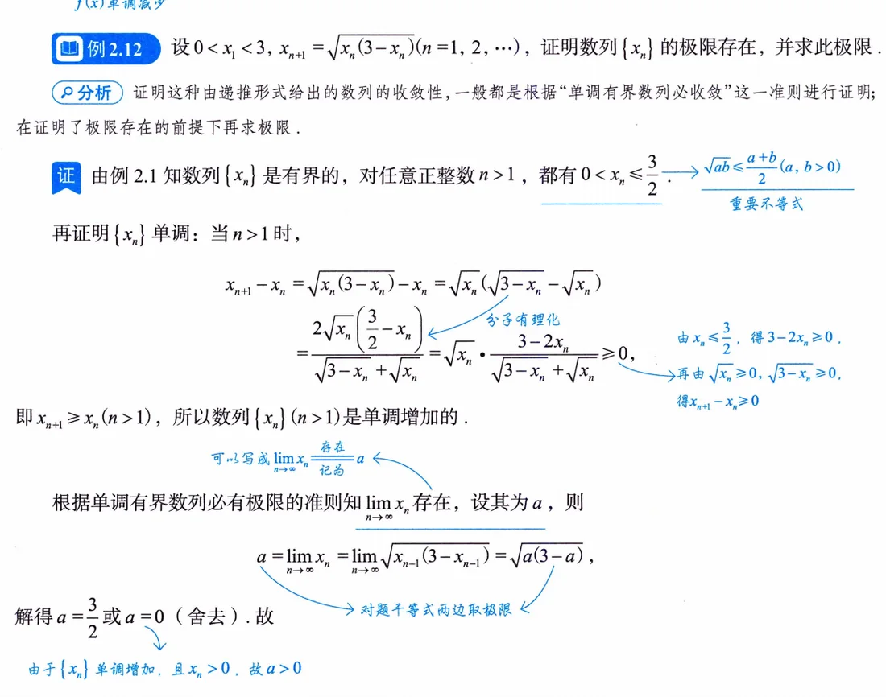
思路：递推数列求极限的标准流程——先有界（例2.1 已证 \(0<x_n\le\frac32\)），再证单调，然后设极限、两边取极限、舍根。
要点：\(n>1\) 时 \[x_{n+1}-x_n=\sqrt{x_n(3-x_n)}-x_n=\sqrt{x_n}\left(\sqrt{3-x_n}-\sqrt{x_n}\right)=\frac{2\sqrt{x_n}\left(\frac32-x_n\right)}{\sqrt{3-x_n}+\sqrt{x_n}}\ge0\] （分子有理化；\(x_n\le\frac32\Rightarrow3-2x_n\ge0\)），故 \(n>1\) 后 \(\{x_n\}\) 单调增加。由单调有界准则设 \(\lim x_n=a\)，对 \(a=\sqrt{a(3-a)}\) 解得 \(a=\frac32\) 或 \(a=0\)；因 \(\{x_n\}\) 单增且 \(x_n>0\)，舍去 \(a=0\)，故 \(\lim x_n=\frac32\)。
例2.13 \(f\) 的单调性决定 \(\{x_n\}\) 的单调性
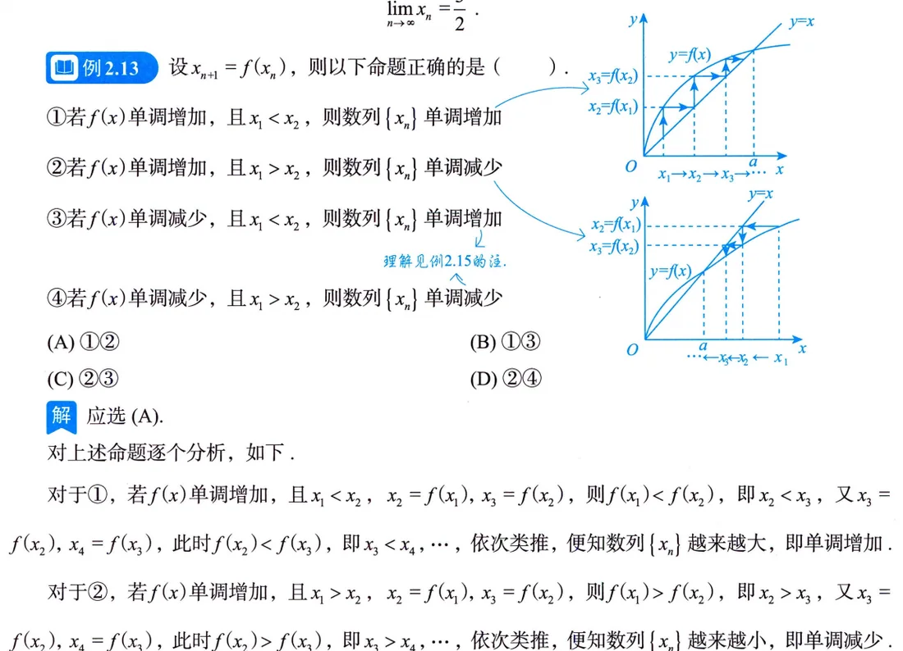
思路：\(x_3=f(x_2)=f(f(x_1))\)，\(f\) 单调增则不等号一路保号传递，\(f\) 单调减则一路反号。
要点：① \(f\) 单调增且 \(x_1<x_2\Rightarrow x_2=f(x_1)<f(x_2)=x_3\)，归纳传递下去 \(\{x_n\}\) 单调增加，对；② 同理 \(f\) 单调增且 \(x_1>x_2\Rightarrow\{x_n\}\) 单调减少，对；③ \(f\) 单调减时 \(x_{n+1}\) 与 \(x_n\) 反向跳，奇偶两个子列一个单增一个单减，\(\{x_n\}\) 不单调（非常数列时），对；④ 反例：\(f(x)=x^2\) 在 \([-1,1]\) 上不单调，取 \(x_1=1\) 得常数列 \(x_n\equiv1\)（单调），错。正确命题共 3 个，选 (C)。
注：这就是"判单调五法"第 e 条的完整版：\(f\) 增看首两项定方向，\(f\) 减则数列不单调，\(f\) 不单调时数列仍可能单调。
例2.14 递推数列大题完整体：先证根唯一，再证收敛
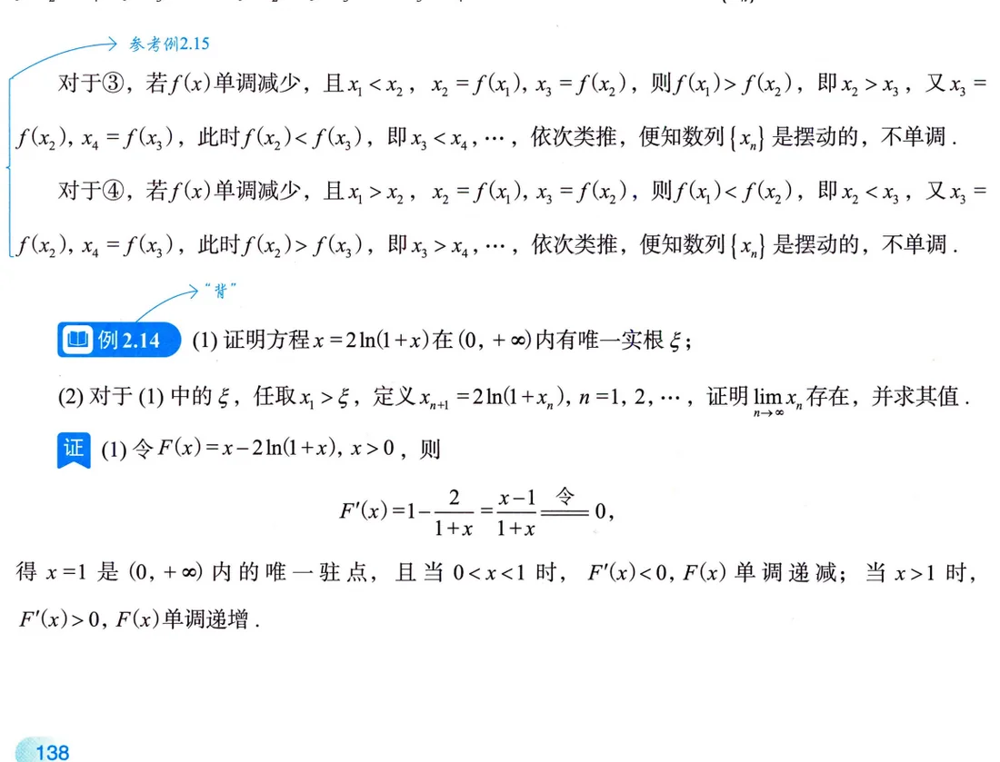
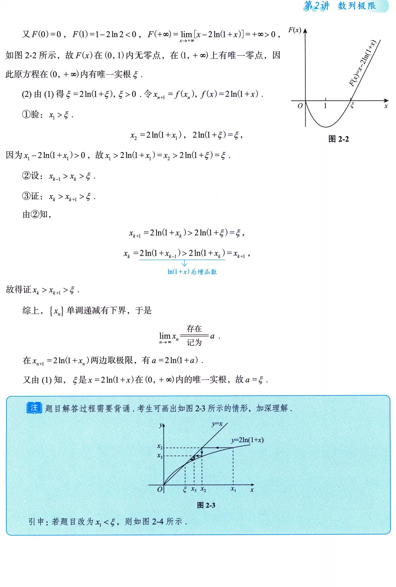
思路：第(1)问零点定理加单调性证根唯一；第(2)问"验—设—证"归纳守住下界 \(\xi\)，作差定单调，两边取极限后靠根的唯一性定值。
要点：(1) 令 \(F(x)=x-2\ln(1+x)\ (x>0)\)，\(F'(x)=\dfrac{x-1}{1+x}\)：\(F\) 在 \((0,1)\) 单减、在 \((1,+\infty)\) 单增；又 \(F(0)=0\)，\(F(1)=1-2\ln2<0\)，\(F(+\infty)=+\infty\)（图 2-2），故 \(F\) 在 \((0,1)\) 内无零点、在 \((1,+\infty)\) 上有唯一零点，即原方程在 \((0,+\infty)\) 内有唯一实根 \(\xi\)（\(\xi>1\)，满足 \(\xi=2\ln(1+\xi)\)）。
(2) ①验：\(x_1>\xi\)；②设：\(x_k>\xi\)；③证：\(x_{k+1}=2\ln(1+x_k)>2\ln(1+\xi)=\xi\)。故对一切 \(n\) 有 \(x_n>\xi\)（有下界）。又 \(x_n>\xi>1\) 时 \[x_{n+1}-x_n=2\ln(1+x_n)-x_n=-F(x_n)<0\] （\(F\) 在 \((1,+\infty)\) 单增且 \(F(\xi)=0\Rightarrow F(x_n)>0\)），故 \(\{x_n\}\) 单调减少。由单调有界准则 \(\{x_n\}\) 收敛；设 \(\lim x_n=a\)，对递推式两边取极限得 \(a=2\ln(1+a)\)，即 \(a\) 也是 \(F\) 的零点，由零点唯一性及 \(a\ge\xi>1\) 得 \(a=\xi\)，即 \(\lim\limits_{n\to\infty}x_n=\xi\)。
注：原书配图 2-4（印P140）画出 \(y=x\) 与 \(y=2\ln(1+x)\) 的迭代路径，\(0<x_1<\xi\) 时迭代点单调上升趋于 \(\xi\)，同理可证。本题是"零点定理 + 单减有下界 + 两边取极限 + 唯一根"的完整范本，解答过程值得整段背下来。
例2.15 压缩映射处理不单调的递推
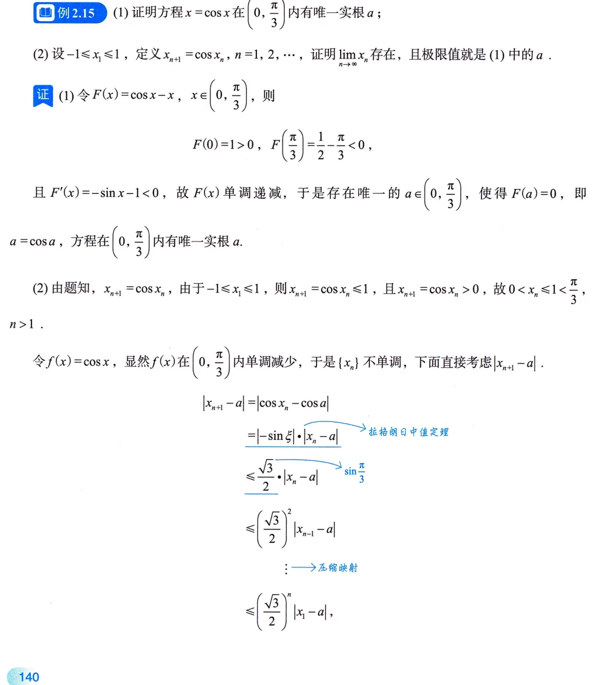
思路：\(f(x)=\cos x\) 在 \((0,\frac\pi3)\) 单减，\(\{x_n\}\) 不单调，证不了单调有界就改证距离被逐次压缩。
要点：(1) 令 \(F(x)=\cos x-x\)，\(F(0)=1>0\)，\(F(\frac\pi3)=\frac12-\frac\pi3<0\)，\(F'(x)=-\sin x-1<0\) 单减，故存在唯一 \(a\in(0,\frac\pi3)\) 使 \(a=\cos a\)。(2) \(n>1\) 时 \(0<x_n\le1<\frac\pi3\)；由拉格朗日中值定理， \[|x_{n+1}-a|=|\cos x_n-\cos a|=|-\sin\xi|\cdot|x_n-a|\le\frac{\sqrt3}2|x_n-a|\le\cdots\le\left(\frac{\sqrt3}2\right)^n|x_1-a|\to0\] （\(\xi\) 介于 \(a\) 与 \(x_n\) 之间，\(\sin\xi\le\sin\frac\pi3=\frac{\sqrt3}2\)），由夹逼准则 \(x_{n+1}\to a\)，即 \(\lim x_n=a\)。
例2.16 \(\varepsilon\) 换成 \(\dfrac1{2^k}\) 仍充要
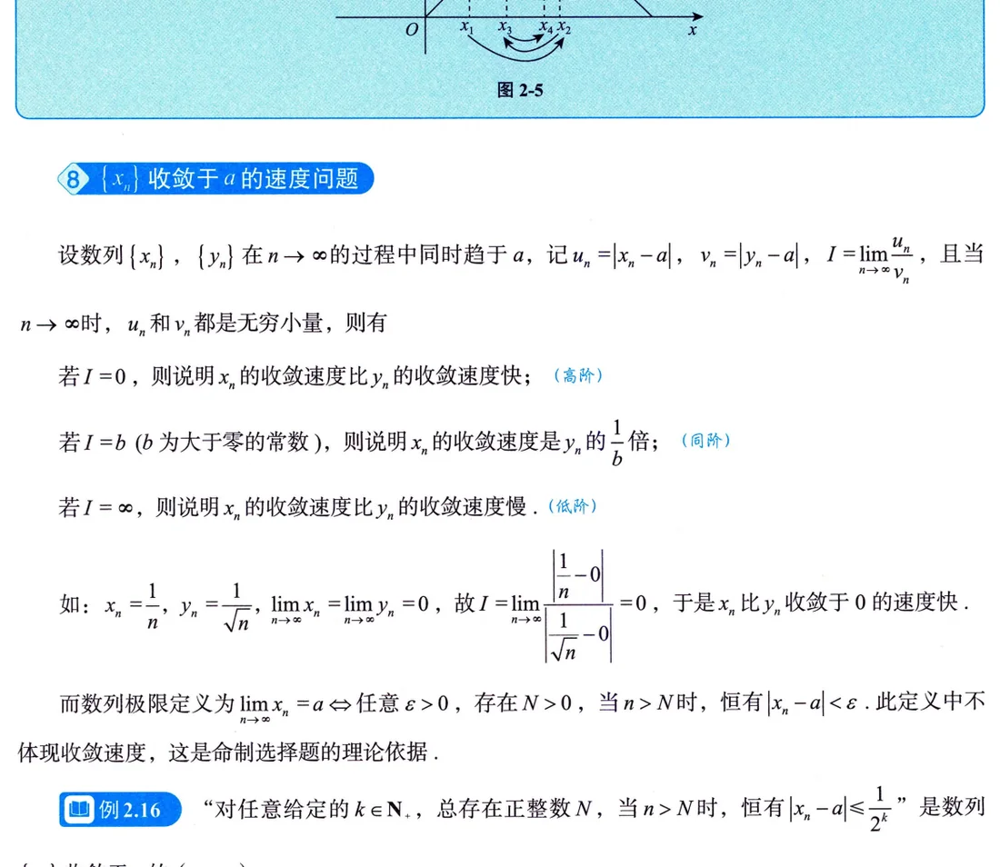
思路：判断 \(\varepsilon\) 的替身合不合法，只看两件事：能否任意小、是否依赖 \(n\)。
要点：题干说"对任意给定的 \(k\in\mathbf{N}_+\)，总存在正整数 \(N\)，当 \(n>N\) 时恒有 \(|x_n-a|\le\dfrac1{2^k}\)"。对任意给定的 \(k\)，\(\dfrac1{2^k}\) 可为任意小的正数且不依赖 \(n\)，记 \(\varepsilon=\dfrac1{2^k}>0\)，该说法与 \(\varepsilon\)-\(N\) 定义完全等价，是充分必要条件，选 (C)。
例2.17 \(\varepsilon\) 换成 \(\dfrac1n\) 只充分
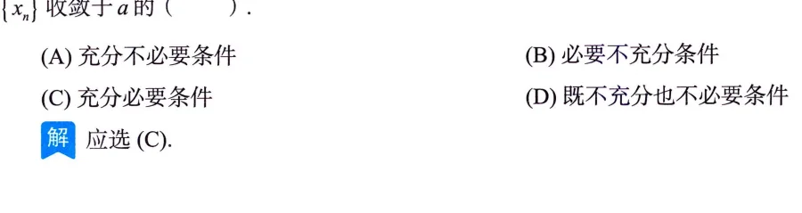
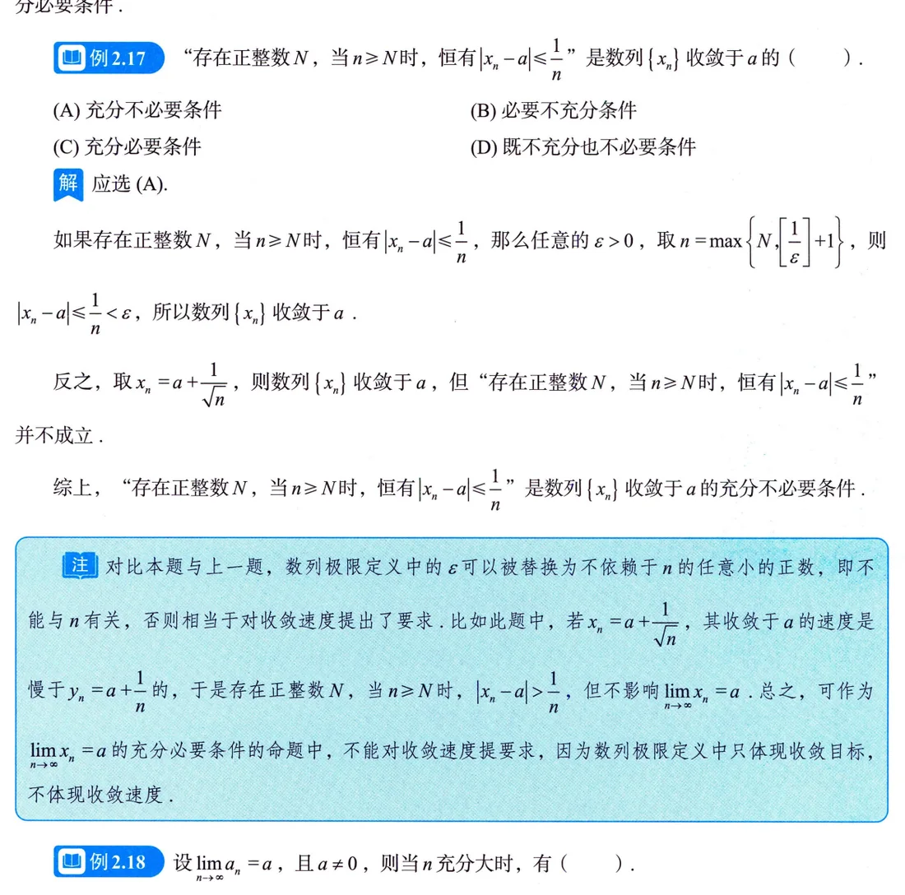
思路：\(\dfrac1n\) 依赖 \(n\)，定义禁用；构造一个收敛但"收敛得慢"的数列当反例即可拆必要性。
要点：若存在 \(N\)，当 \(n>N\) 时恒有 \(|x_n-a|\le\dfrac1n\)，则任给 \(\varepsilon>0\)，取 \(N\) 使 \(\dfrac1{N+1}<\varepsilon\)，即得 \(|x_n-a|<\varepsilon\)，故 \(\lim x_n=a\)，充分性成立。反之取 \(x_n=a+\dfrac1{\sqrt n}\to a\)，但 \(\dfrac1{\sqrt n}>\dfrac1n\)，条件不满足，必要性不成立。所以只是充分不必要条件，选 (A)。
注：对收敛速度提要求的命题只能当充分条件，分界线就是"\(\varepsilon\) 是否依赖 \(n\)"——与例2.16 对照记忆。
例2.18 极限非零则项的绝对值有正下界
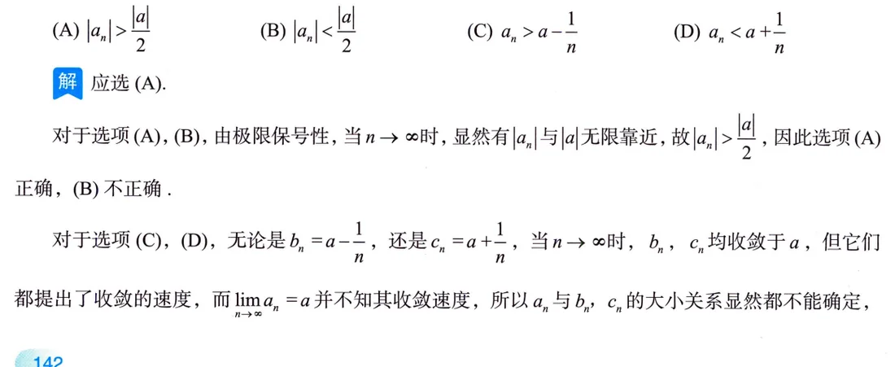
思路：用三角不等式把 \(|a_n|\) 往下托：\(|a_n|\ge|a|-|a_n-a|\)。
要点：设 \(\lim a_n=a\neq0\)，取 \(\varepsilon=\dfrac{|a|}2>0\)，存在 \(N\)，当 \(n>N\) 时 \(|a_n-a|<\dfrac{|a|}2\)，于是 \[|a_n|\ge|a|-|a_n-a|>|a|-\frac{|a|}2=\frac{|a|}2,\] 即 \(n\) 充分大后恒有 \(|a_n|>\dfrac{|a|}2\)。
注：这是保号性的绝对值版推论，后面级数判敛时反复要用（判断 \(a_n\) 不趋于零）。
易错点与技巧
- \(n\to\infty\) 就是 \(n\to+\infty\)，且是一步一步跳着去的。正因为离散，数列不能直接洛必达、泰勒，得先靠海涅定理换成函数极限（印P126、130）。
- 四则运算的前提是两个极限都存在：存在 \(\pm\) 存在 \(=\) 存在；存在 \(\pm\) 不存在 \(=\) 不存在；不存在 \(\pm\) 不存在 \(=\) 不确定。反例 \(\sin n+(-\sin n)\)（印P130）。
- \(\lim a_n=A\) 只保证 \(\lim|a_n|=|A|\)；反方向只在 \(A=0\) 时成立：\(\lim a_n=0\iff\lim|a_n|=0\)。要证 \(a_n\to0\)，先取绝对值再用夹逼，省一半力气，只需找到 \(|a_n|\le b_n\) 且 \(b_n\to0\)（印P128）。
- 无界不等于无穷大量：奇偶子列一个 \(\to0\) 一个 \(\to+\infty\)（例2.4），或 \(\frac1x\sin\frac1x\ (x\to0)\)（例2.7），都是无界量但非无穷大量（印P128、131）。
- 单调有界准则别两边都证：单增要补的是上界，单减要补的是下界，证反方向白费篇幅（印P136）。
- 递推数列必须先证收敛再两边取极限，否则设出来的 \(a\) 没有意义；解出两个根要按保号性和首项舍根（例2.12 舍 \(a=0\)，印P137）。
- \(\varepsilon\)-\(N\) 定义里的 \(\varepsilon\) 不能依赖 \(n\)。对收敛速度提要求的命题（如恒有 \(|x_n-a|\le\frac1n\)）只能当充分条件；\(\frac1{2^k}\) 不依赖 \(n\)，才与定义等价（印P141–142，例2.16/2.17/2.18）。
- 脱帽戴帽方向别搞反：脱帽只能严格（\(\lim x_n>a\Rightarrow x_n>a\)），戴帽只能不严格（\(x_n\ge a\Rightarrow\lim x_n\ge a\)），\(x_n>-1\) 只能推出 \(\lim x_n\ge-1\) 而非 \(>-1\)（印P129）。
考点与方法补充（站注）
站注：本节为笔记编写者补充，非原书内容。考频数据来自新东方《考研高数历年真题大数据》等公开统计，方法论引自张宇公开课与经验贴共识；数学事实一律以原书为准。
考频定位（站注·真题大数据）
极限计算整体属第一梯队（每年至少 2 题），但卷面大头是函数极限；数列极限单独出镜不算高频，可一旦出手往往就是解答题，命题点几乎钉死在两个存在准则上——夹逼准则与单调有界准则。近 15 年真题里，"单调有界（或压缩映射）证收敛 \(\to\) 两边取极限"的递推数列大题反复出现；\(n\) 项和式极限是小题常客（夹逼与定积分定义两条路都要会）；海涅定理、子列判发散、\(\varepsilon\)-\(N\) 语言的变形（例2.16/2.17 这类充要性辨析）则是选择题熟面孔。
高频题型与套路（站注）
- \(n\) 项和式：分母同阶、各项同量级 \(\to\) 放缩夹逼（例2.9 型）；固定项数、每项带 \(\tfrac1n\) \(\to\) 凑定积分定义 \(\lim\limits_{n\to\infty}\dfrac1n\sum f\left(\dfrac in\right)\)（书在积分学部分展开，先留个眼）；开 \(n\) 次方 \(\to\) 例2.10 的 max 公式直接报答案。
- 递推数列大题流水线：证有界（归纳法/基本不等式）\(\to\) 证单调（作差、作商、归纳、重要不等式、导数五法择一）\(\to\) 设极限两边取 \(\to\) 按保号性或根唯一性舍根定值（例2.12、例2.14）。\(f'<0\) 递推数列不单调，换压缩映射（例2.15）。
- 概念小题：无界量 vs 无穷大量（例2.4/2.7）、子列与原数列的关系（例2.3）、脱帽戴帽方向、\(\varepsilon\) 替身合法性（例2.16/2.17）。
- 过桥计算：\(\sqrt[n]{\cdot}\)、\(1^\infty\)、\(\dfrac\infty\infty\) 型一律海涅定理换成函数极限，L1 攒下的等价无穷小、洛必达、泰勒全部复活（例2.8、例2.11）。
张宇方法论（站注）
张宇反复强调：尽快结束纯听课阶段、自己动手算最重要——数列极限大题套路再固定，不动手完整写几遍，考场上照样卡壳；证明题不能放弃，本讲的"证收敛"正是数一数二大题常客；"判定类型，做好计算"的判定先行思想用在这里就是：拿到数列先分型（递推型/和式型/抽象条件型/概念辨析型），再对号入座选套路，别上来就蛮算。
与前后讲的衔接（站注）
- 接 L1：函数极限的工具箱（等价无穷小、洛必达、泰勒、\(1^\infty\) 套路）全靠海涅定理过桥迁移到数列；L1 讲的"无界 \(\neq\) 无穷大量"，用数列子列刻画最清楚（例2.7 是函数版，例2.4 是数列版，互相印证）。
- 通 L6：例2.14 第(1)问的零点定理、例2.15 的拉格朗日中值定理都是中值定理的预演，学完 L6 回来重做这两题，会有工具升级的感觉。
- 望积分学：\(n\) 项和式极限的另一条路是定积分定义，书在积分学部分展开；现阶段先把夹逼放缩练到条件反射，到时候两条路一起选。
知识清单自测
自测题
1.（填空） 设 \(\lim\limits_{n\to\infty}\dfrac{n^{99}}{n^k-(n-1)^k}\) 存在且不为零，求常数 \(k\)。
查看答案
解 因式分解分母：\(n^k-(n-1)^k=n^k\left[1-\left(1-\frac1n\right)^k\right]\)，而 \(\left(1-\frac1n\right)^k-1\sim-\frac kn\)，故分母 \(\sim k\,n^{k-1}\)，于是
\[\lim_{n\to\infty}\frac{n^{99}}{n^k-(n-1)^k}=\frac1k\lim_{n\to\infty}n^{99-k+1},\]
极限存在且不为零 \(\iff 99-k+1=0\)，即 \(k=100\)。（印P144，习题2.4）
2.（计算） 求 \(\lim\limits_{n\to\infty}\left(\dfrac1{\sqrt{n^2+1}}+\dfrac1{\sqrt{n^2+2}}+\cdots+\dfrac1{\sqrt{n^2+n}}\right)\)。
查看答案
解 分母越大分数越小：
\[\frac{n}{\sqrt{n^2+n}}\le\sum_{i=1}^n\frac1{\sqrt{n^2+i}}\le\frac{n}{\sqrt{n^2+1}},\]
又 \(\lim\dfrac{n}{\sqrt{n^2+n}}=\lim\dfrac{n}{\sqrt{n^2+1}}=1\)，由夹逼准则得极限为 \(1\)。（印P144，习题2.5）
3.（证明并求值） 设 \(0<x_1<\pi\)，\(x_{n+1}=\sin x_n\ (n=1,2,\cdots)\)，证明 \(\{x_n\}\) 收敛并求极限。
查看答案
证 先证各 \(x_n>0\)：\(x_2=\sin x_1\in(0,1]\subset(0,\pi)\)，归纳可设 \(0<x_k<\pi\)，则 \(x_{k+1}=\sin x_k>0\)。由 \(\sin x<x\ (x>0)\) 得 \(x_{n+1}<x_n\)，故 \(\{x_n\}\) 单调减少且有下界 \(0\)，由单调有界准则收敛。设极限为 \(a\)，对 \(x_{n+1}=\sin x_n\) 两边取极限得 \(a=\sin a\)，唯一解为 \(a=0\)，故 \(\lim x_n=0\)。（单调性出处见印P133 注⑤⑥）
4.（证明） 证明数列 \(\left\{(-1)^n\left(1-\frac1n\right)\right\}\) 发散。
查看答案
证 取偶子列：\(a_{2k}=1-\frac1{2k}\to1\)；取奇子列：\(a_{2k-1}=-\left(1-\frac1{2k-1}\right)\to-1\)。两个子列都收敛但极限不同，由"收敛数列的任何子列也收敛且极限相同"的逆否命题，原数列发散。（印P127 定理1）
5.（选择） "对任意给定的 \(k\in\mathbf{N}_+\)，总存在正整数 \(N\)，当 \(n>N\) 时，恒有 \(|x_n-a|\le\dfrac1{2^k}\)"是数列 \(\{x_n\}\) 收敛于 \(a\) 的（ ）。
(A) 充分不必要条件 (B) 必要不充分条件 (C) 充分必要条件 (D) 既不充分也不必要条件
查看答案
解 应选 (C)。对任意给定的 \(k\in\mathbf{N}_+\)，\(\dfrac1{2^k}\) 可为任意小的正数且不依赖 \(n\)，记 \(\varepsilon=\dfrac1{2^k}>0\)，题干说法与 \(\varepsilon\)-\(N\) 定义等价，故是充分必要条件。（原书例2.16，印P141；对照例2.17：换成 \(\frac1n\) 就只是充分不必要）